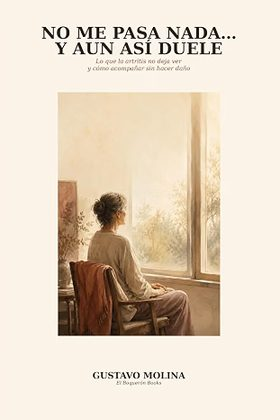
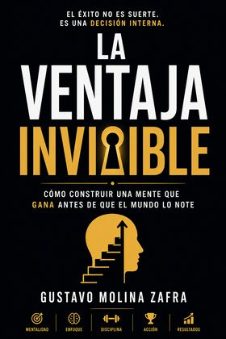

El marcapáginas que se acuerda por ti.
Pulsa el libro, escribe la página y vuelve a leer. Tres segundos, y nunca más esa duda de por dónde ibas.
Sin tarjeta para empezar. Después, 12,99 € al año.
Tu estante
Toca un lomo y anota por dónde vas.
El infinito en un junco
187
de 452 páginas
Se usa con una mano y sin pensar
Está hecho para el momento exacto en que cierras el libro: medio dormido, con el móvil en la otra mano.
Abres tu estante
Desde el acceso directo del móvil o acercándolo a tu marcapáginas. Tus libros en curso están arriba, sin buscar nada.
Tocas el libro
Te dice por qué página ibas y cuánto te queda. Si retomas después de semanas, el dato está ahí esperándote.
Anotas y cierras
Teclado grande o los botones de +10 y +25 páginas. Se guarda solo, en todos tus dispositivos.
Lo que aparece cuando llevas unas semanas
No es un registro por registrar. Cada vez que anotas una página, BookMark aprende cómo lees.
Tu racha
Los días seguidos que has leído algo. Es el motivo por el que mucha gente abre la app antes de dormir.
Tu ritmo real
La media de páginas que avanzas cada vez que te sientas a leer. Sin estimaciones inventadas: tus números.
Cuándo lo acabarás
Con tu ritmo y las páginas que quedan, la fecha en que terminarás el libro que tienes entre manos.
Todo tu histórico
Los leídos, los que esperan turno y los que dejaste a medias. Tu biblioteca entera en una pantalla.
Esto es la aplicación entera
Tres pantallas. No hay menús escondidos ni ajustes que descifrar: se abre, se toca el libro y se cierra.
Buenas noches. Un rato de lectura.
Elige el libro y dime por qué página vas.


Tu estante, al abrir
Vas por la página
187
de 452 páginas
Anotar, en dos toques
Cómo vas leyendo
Se calcula solo con lo que anotas.
Tu ritmo, sin esfuerzo
Y si quieres, sin abrir nada
Un marcapáginas con chip NFC dentro. Lo dejas en la mesilla o entre las páginas, acercas el móvil y tu estante se abre solo. Ni desbloquear, ni buscar el icono, ni escribir.
Funciona en Android y en iPhone desde el XS. La app no lo necesita: es un atajo, no un requisito.
Un precio y ya está
Sin niveles, sin funciones bloqueadas, sin anuncios.
al año · IVA incluido
- Libros ilimitados en tu estante
- Sincronizado en móvil, tablet y ordenador
- Racha, ritmo y fecha estimada de fin
- Acceso con marcapáginas NFC
- Tus datos son tuyos y puedes borrarlos
No pedimos tarjeta para probar. Si no renuevas, tus libros siguen ahí para consultarlos.
Dudas razonables
¿Necesito el marcapáginas NFC para usarlo?
No. BookMark funciona entero desde el navegador del móvil o instalado como aplicación. El marcapáginas es un atajo cómodo, nada más.
¿Funciona en iPhone?
Sí. La app va en cualquier navegador moderno. Para la parte del NFC necesitas un iPhone XS o posterior con iOS 14 o superior, que leen etiquetas sin abrir ninguna aplicación.
¿Qué pasa con mis libros si no renuevo?
Siguen en tu cuenta y puedes consultarlos cuando quieras. Lo que se detiene es anotar páginas nuevas y añadir libros, hasta que renueves.
¿Puedo llevarme mis datos?
Sí. Puedes pedir una copia de tu biblioteca o el borrado completo de la cuenta desde los ajustes, y se ejecuta sin preguntas.
¿En qué se diferencia de apuntarlo en el móvil?
En que no tienes que decidir dónde apuntarlo ni buscarlo después. Y en lo que aparece con el tiempo: tu ritmo real de lectura, la racha de días y cuándo vas a terminar cada libro.
¿Hay publicidad o venden mis datos de lectura?
No. Esa es precisamente la razón de cobrar 12,99 € al año en lugar de regalar la app.